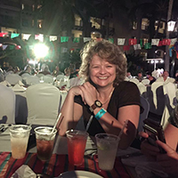

About Me
I have had a diverse career in software and telecom, having positions ranging from a software trainer, consultant, sales engineer, and as a leader in product marketing and product management. I hold many training, Agile, and Pragmatic Marketing certifications. I currently work at Encompass Digital Media where I'm the Global Head of Marketing.
I have a BS in Mechanical Engineering from Georgia Tech, where I played varsity basketball and was an Aerospace Engineering CAD Software teaching assistant.
I live in the Toco Hills area of Decatur, but enjoy spending as much time as possible in Savannah, on the water, fishing with my father at our family home. When I'm not in Atlanta or Savannah, I'm in Vegas, cause that’s how I roll...if you spend any time with me, you will learn that I LOVE Vegas, can mix a mean drink, brew my own beer, am a littly crafty, and LOVE fishing. I'm incredibly organized. When things become chaotic, I make a plan, write it down, and distribute it to everyone. When there really is a Zombie Apocalypse, come to my house, because I'll actually know what to do next.
Other little known facts: Due to a soccer accident, I'm deaf in one ear (helpful to know when having a conversation), I can’t stand people munching chips while I'm trying to work ( I use noise cancelling headphones cause people eat chips all the time at work), I've biked all over New Zealand and Holland (cool!), I've seen the fish market in Japan (at 4 AM!), I speak enough French to be dangerous, I would love to live in Munich, and I LOVE coffee ( ask me about brewing Turkish coffee and my New York cab driver experience.
Connect with Me